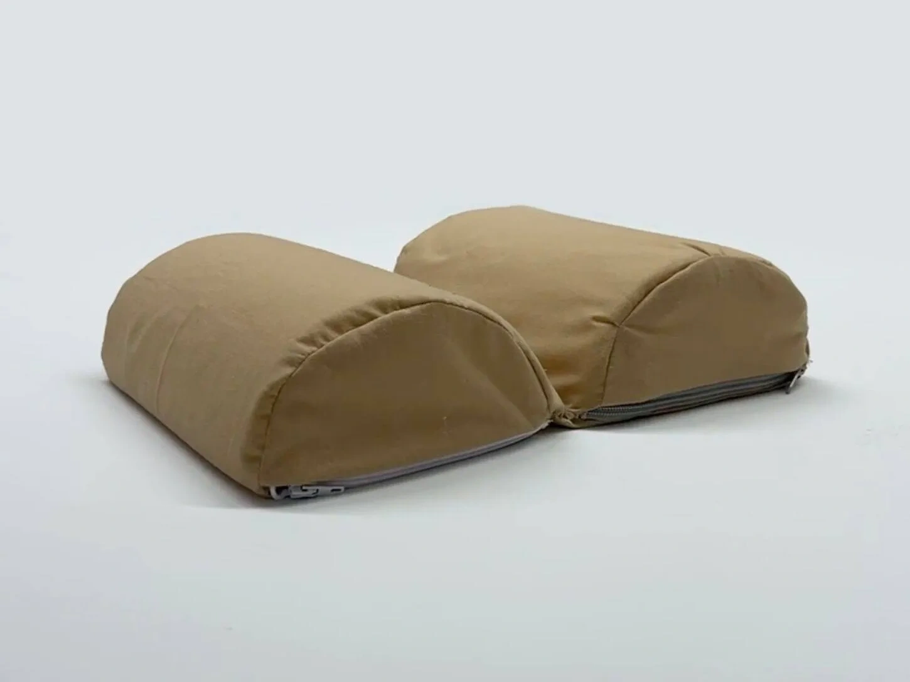
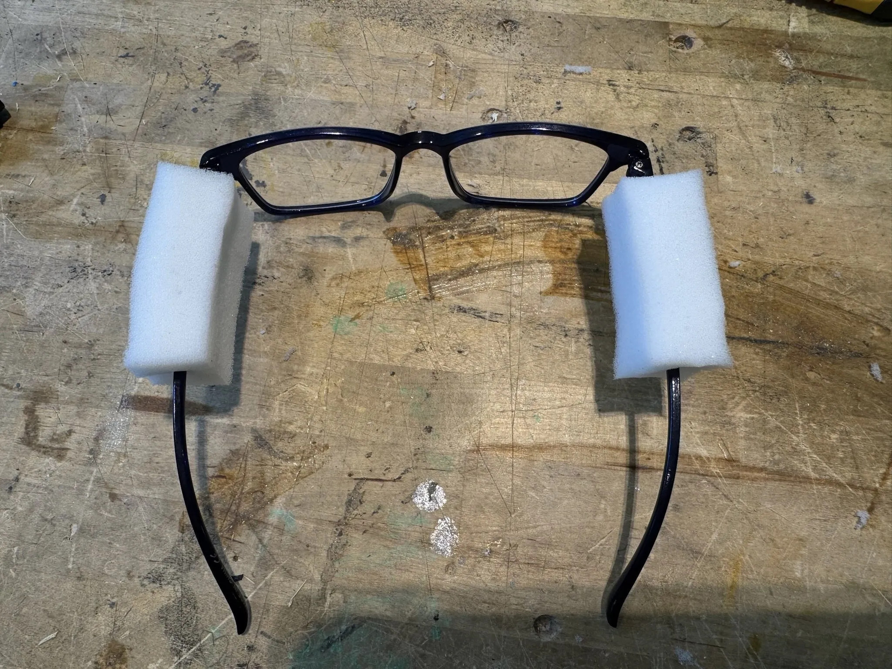

Human-Centered Product Design
Designed a pillow to allow glasses-wearers to lie on their side.

Overview
In the second quarter of Design Thinking & Communication (DTC), I worked with a team to design a pillow that allows users to lie comfortably on their side with glasses on. This was a white-space project, meaning we were not given a specific problem to solve, but rather tasked with identifying a problem space and designing a solution within it. After creating a questionnaire and distributing it to friends and posting campus flyers with QR codes, we compiled a list of 100 problems. Through research and analysis of existing solutions, we narrowed this down to 25 problems, then 10, and finally 1. The identified problem was that glasses-wearers struggle to lie on their side while reading or scrolling on their phone because their glasses get in the way, and it puts pressure on their face and temples. Our solution was a pillow with clearance for the glasses' legs, with the added benefit of portability.
We began by brainstorming and creating several mockups; see Fig. 1, Fig. 2, and Fig. 3. I designed the mockup in Fig. 3, a 3D-printed set of glasses with buckles for attaching and removing the legs, similar to backpack straps, allowing users to remove whichever leg they prefer to rest their head on. We tested these mockups with users and gathered feedback by asking them to rank each design comparatively across different categories. From this, we found that users preferred the pillow with the slit.
We then iterated on the design, switching to semicircle pieces of foam instead of a thin slit to better guide the user's glasses into position while accommodating different-sized glasses and frames (see Fig. 4 for a photo of the foam pieces). The pillow case was sewn with fabric and two zippers to allow the user to remove the foam pieces for washing. See Fig. 5 and Fig. 6 for photos of the final product. We also designed the pillow to be foldable so it can be easily transported and stored. See Fig. 7 for the pillow in the folded position.
The final deliverables included a final report in the form of a website, a presentation, and an infomercial video. See Fig. 8 for the infomercial, which I filmed and edited.
Gallery

Fig. 1. A mockup using foam to add padding on the sides of the glasses, reducing the pressure on the user's temples.